<div id='container'>

    <div class="card">
        <button mat-fab color="primary" aria-label="Example icon button with a delete icon" style="height:65px; width: 65px;" class="buttonback" routerLink="/">
            <mat-icon>arrow_back</mat-icon>
          </button>
      
      <h1>About Us</h1> <br>

      <h3>Calling bird is a web application that 'KEEPS' the connection of people storing their contacts for emergency 
    this way people who lost their phones or gadgets could use Callingbird and our bird will help you reconnect with every
person you think, this is just the version 1.0 and will be further developed when time goes by. </h3>


      
</div>
</div>